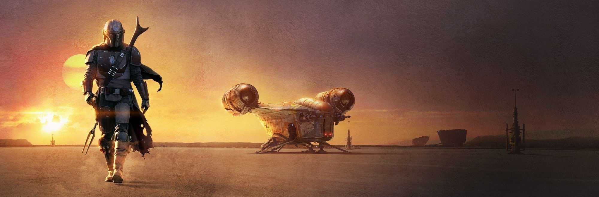

Es una serie de televisión por internet de aventura espacial y wéstern espacial estadounidense que se estrenó en Disney+ el 12 de noviembre de 2019 en EE. UU. En España, la serie se preestrenó en Mediaset España el 24 de marzo de 2020. En Latinoamérica se preestrenó el 15 de noviembre de 2020, en transmisión exclusiva de los episodios 1 y 2 por Fox Channel. Ubicada en el universo de Star Wars creado por George Lucas, la serie se sitúa 5 años después de los eventos de Return of the Jedi, y sigue a un solitario pistolero más allá de los alcances de la Nueva República. Jon Favreau es el guionista, creador y showrunner de la serie, y es productor ejecutivo junto con Dave Filoni y Colin Wilson. La serie está protagonizada por Pedro Pascal, Katee Sackhoff, Carl Weathers, Gina Carano, Nick Nolte, Emily Swallow, Werner Herzog, Giancarlo Esposito y Omid Abtahi.

Argumento
Cinco años después de los eventos de El Retorno del Jedi y la caída del imperio galáctico, The Mandalorian sigue a Din Djarin, un cazarrecompensas mandaloriano solitario en los confines de la galaxia. Es contratado por las fuerzas imperiales remanentes para recuperar al niño Grogu, pero en su lugar huye para protegerlo. Mientras buscan reunir a Grogu con los de su clase, son perseguidos por Moff Gideon, que quiere usar la conexión de Grogu con la Fuerza. Para la tercera temporada, el dúo viajara a Mandalore para que Din Djarin pueda redimirse por la transgresión de quitarse el casco.
Protagonistas
El Mandaloriano (Din Djarin), interpretado por Pedro Pascal, es un pistolero solitario y cazarrecompensas que a veces se conoce como mando (un término genérico y posiblemente ofensivo utilizado para referirse a todos los mandalorianos). Es un huérfano que fue rescatado a temprana edad por los mandalorianos. Pascal ha descrito a su personaje como Clint Eastwood, con habilidades avanzadas de combate y "carácter moral cuestionable".
El Niño (interpretado por varios titiriteros), cuyo nombre verdadero es Grogu y pertenece a la misma especie que alguna vez fue el maestro Yoda con habilidades similares en la Fuerza. Pese a ser apodado cariñosamente como "el niño" tiene más de 50 años y es un ejemplar muy joven de su especie. El cliente imperial ofrece una gran recompensa por capturar al niño, pero este es encontrado y protegido por Din Djarin a lo largo de la serie, mientras se convierte en el objetivo de una multitud de cazarrecompensas que quieren secuestrarlo.
CoProtagonistas
Katee Sackhoff como Lady Bo-Katan Kryze, legendaria guerrera mandaloriana cuyo asentamiento actual es el castillo de Kalevala, líder de los Búhos Nocturnos, y pretendiente al trono de Mandalore. Aspira a obtener el Sable Oscuro que posee Din Djarin y así dirigir a los mandalorianos. Es la hermana menor de la duquesa Satine Kryze, antigua gobernante del planeta. katee Sackhoff reinterpreta el personaje de las series The Clone Wars y Rebels.
Carl Weathers como Greef Karga, un exmagistrado y líder de un gremio de cazarrecompensas en el planeta Nevarro que contrata al mandaloriano para rastrear un activo valioso, a partir de la segunda temporada vuelve a su puesto de magistrado de Nevarro.
Werner Herzog como El Cliente, un hombre sin nombre con soldados de asalto como guardaespaldas que se encarga de que el mandaloriano rastree un activo valioso.
Omid Abtahi como el Dr. Pershing, un científico que trabaja para "el Cliente".
Nick Nolte como la voz de Kuiil, un ugnaught granjero que compró su libertad después de ser esclavizado por el Imperio. Misty Rosas proporcionó la captura de movimiento de Kuiil
Música
El 19 de diciembre de 2018 se anunció que Ludwig Göransson compondría la banda sonora de la serie. Cada capítulo tiene su propio álbum, lanzado el mismo día. Para la composición, Göransson interpretó él mismo muchos de los instrumentos principales, añadiendo posteriormente una orquestra de 70 piezas. Escribió un total de cuatro horas de música para la serie.
Göransson también va a componer la música para la segunda temporada de la serie